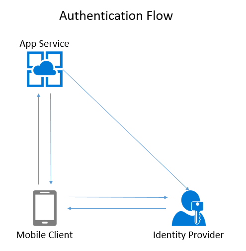

Authentication Concepts¶
One of the very first things you want to do when developing a mobile app is to provide users with a unique experience. For our example task list application, this could be as simple as providing a task list for the user who is logged in. In more complex applications, this is the gateway to role-based access controls, group rules, and sharing with your friends. In all these cases, properly identifying the user using the phone is the starting point.
Authentication provides a process by which the user that is using the mobile device can be identified securely. This is generally done by entering a username and password. However, modern systems can also provide multi-factor authentication, send you a text message to a registered device, or use your fingerprint as the password.
The OAuth Process¶
In just about every single mobile application, a process called OAuth is used to properly identify a user to the mobile backend. OAuth is not an authentication mechanism in its own right. It is used to route the authentication request to the right place and to verify that the authentication took place. There are three actors in the OAuth protocol:
- The Client is the application attempting to get access to the resource.
- The Resource is the mobile backend that the client is attempting to access.
- The Identity Provider (or IdP) is the service that is responsible for authenticating the client.
At the end of the process, a cryptographically signed token is minted. This token is added to every request made by the client to the resource to securely identify the user.
Server Side vs. Client Side¶
There are two types of authentication flow: Server-flow and Client-flow. They are so named because of who controls the flow of the actual authentication.

Server-flow is named because the authentication flow is managed by the Azure App Service (the server) through a webview-based work flow. It is generally used in two cases:
- You want a simple placeholder for authentication in your mobile app while you are developing other code.
- You are developing a traditional web app.
Tip
If you are developing a single-page application (SPA), then client-flow is the more appropriate model for authentication. The SPA looks more like a mobile client than a traditional web app. In particular, you will be redirected away from your single page and returned to the app at a specific entry point, removing any context from the app.
In the case of server-flow:
- The client brings up a web view and asks for the login page from the resource.
- The resource redirects the client to the identity provider.
- The identity provider does the authentication before redirecting the client back to the resource (with an identity provider token).
- The resource validates the identity provider token with the identity provider.
- Finally, the resource mints a new resource token that it returns to the client.
Client-flow authentication uses an IdP provided SDK to integrate a more native feel to the authentication flow. The actual flow happens on the client, communicating only with the identity provider. It is used is most cases:
- You want a more integrated experience for your users.
- You want the most native feel to your authentication flow.
- You are developing a single-page web application.
A client-flow feels similar to the server-flow, but using a native SDK instead of a web view.
- The client uses the identity provider SDK to communicate with the identity provider.
- The identity provider authenticates the user, returning an identity provider token.
- The client presents the identity provider token to the resource.
- The resource validates the identity provider token with the identity provider.
- Finally, the resource mints a new resource token that it returns to the client.
For example, if you use the Facebook SDK for authentication, your app will seamlessly switch over into the Facebook app and ask you to authorize your client application before switching you back to your client application.
You should use the identity provider SDK when developing an app that will be released on the app store. The identity providers will advise you to use their SDK and it provides the best experience for your end users.
Info
The Azure App Service Authentication / Authorization service works with any App Service, including web apps and API apps. It's not just for Mobile Apps.
Authentication Providers¶
Azure Mobile Apps supports five identity providers natively:
- Azure Active Directory
- Microsoft (MSA)
Info
Azure App Service Authentication / Authorization maintains a token store in the XDrive (which is the drive that is shared among all instances of the backend within the same App Service Plan). The token store is located at D:\\home\\data\\.auth\\tokens on the backend. The tokens are encrypted and stored in a per-user encrypted file.
In addition, you can set up client-flow custom authentication that allows you to mint a ZUMO token to your specifications for any provider using a client-flow. For example, you could use authentication providers like Azure AD B2C, LinkedIn or GitHub, a third-party authentication provider like Auth0, or you could set up an identity table in your database so that you can check username and password without an identity provider.